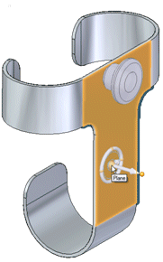
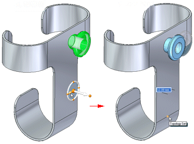
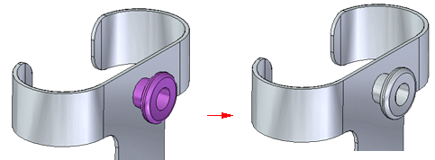

Pasting elements
The Paste command inserts elements at a specified location. When pasting elements, you can press F3 to lock to a plane.

Once pasted, you can use the steering wheel to move the geometry into the desired position and orientation.

When placed, any closed solid volumes are pasted to the models as solids. However, faces and manufactured features are added as detached geometry. Once pasted, use the Attach command to attach the geometry as a solid to the model.

You can move or rotate the geometry before or after it has been attached.
Pasting 2D elements
-
When a 2D element is pasted, the element’s orientation is relative to its native sketch plane. If the sketch being pasted is coincident with another sketch plane in the target document, it is absorbed to the existing sketch. If the sketch is not coincident with any other sketch plane, it creates a new sketch plane. Sketches with new planes are added to the PathFinder as new sketches.